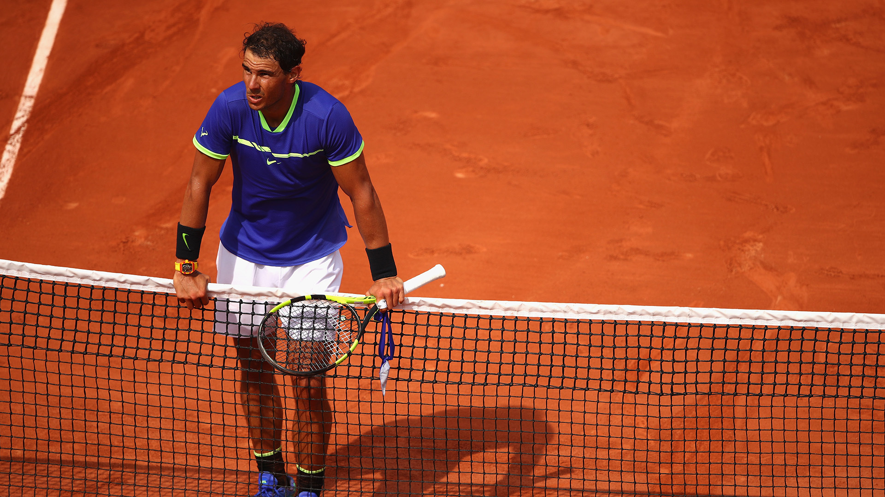
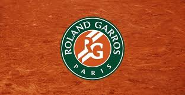
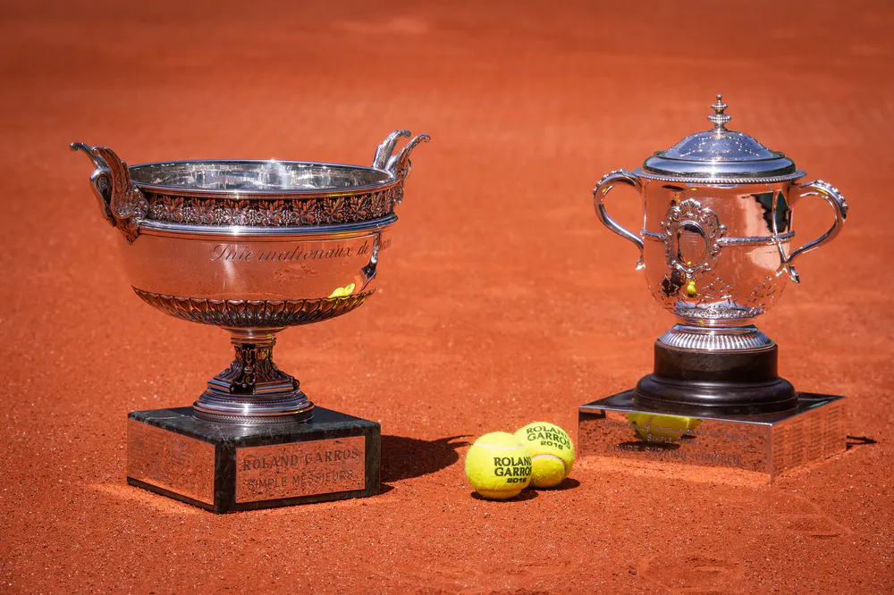
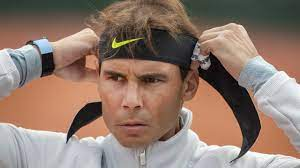
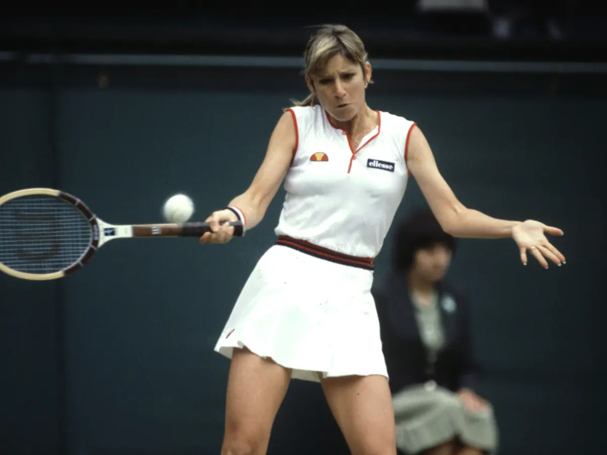
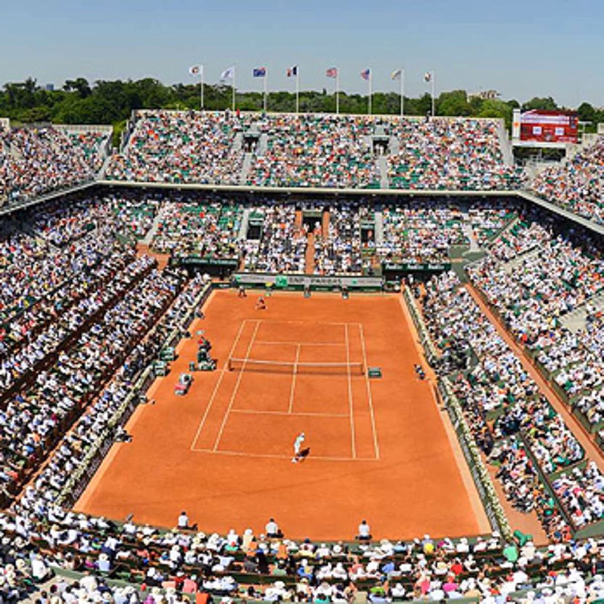
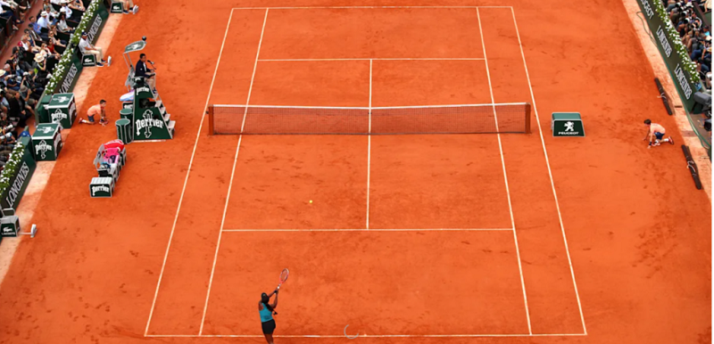
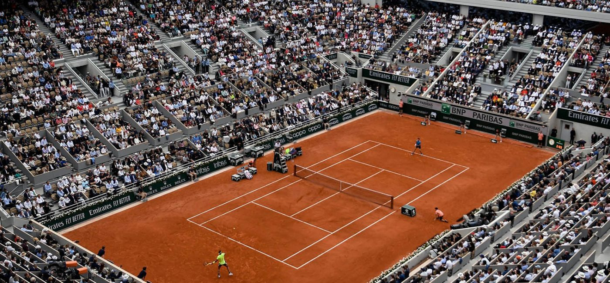
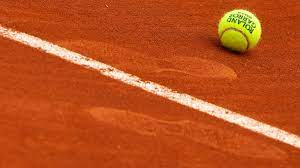

The French Open, also known as Roland Garros, is a prestigious tennis tournament held annually in Paris, France. It is the premier clay court championship event and is known for its unique red clay courts. The tournament has a rich history of producing some of the greatest champions in tennis history, including Rafael Nadal and Chris Evert. The event includes singles, doubles, mixed doubles, junior, and wheelchair events, and is the second Grand Slam tournament of the year, typically held in late May and early June.
Clay Courts
The French Open is the largest clay court tournament in the world, featuring 20 courts in total, including the iconic Court Philippe Chatrier, which has a seating capacity of over 15,000 spectators
History of the Name
The tournament is named after the French aviator Roland Garros, who was the first person to fly across the Mediterranean Sea. Garros was also a tennis player, and he competed in the French Open before his untimely death during World War I.
Famous Thropy
The French Open is famous for its unique trophy, the Coupe des Mousquetaires, which translates to "The Musketeers' Trophy." The trophy is made of pure silver and features the engraved names of all the past winners, including Rafael Nadal, who has won the trophy a record 13 times.
Rafael Nadal
With 13 French Open titles to his name, Rafael Nadal is considered the greatest clay court player of all time. He has dominated the tournament since his first win in 2005, winning it every year except for 2016 and 2020.
Bjorn Borg

Bjorn Borg won six French Open titles in the late 1970s and early 1980s. He is considered one of the greatest players in the history of the tournament, and his rivalry with fellow legend John McEnroe is one of the most memorable in tennis history.
Chris Evert
Chris Evert won seven French Open titles in the 1970s and 1980s, establishing herself as one of the greatest women's players of all time. Her consistent baseline play and mental toughness were perfectly suited to the clay courts of Roland Garros.
Check out these Photos of the French Open




